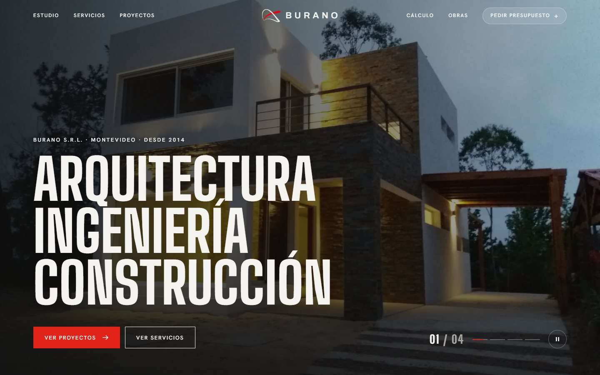
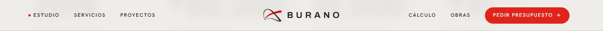
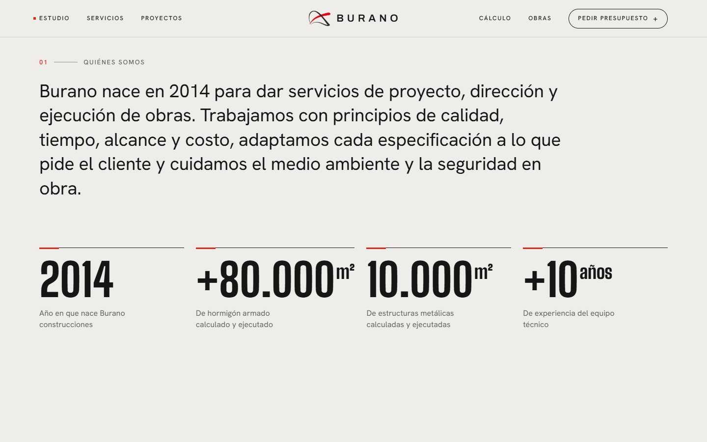
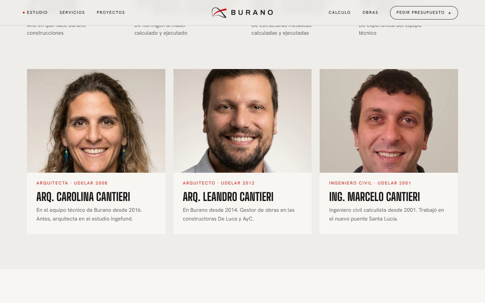
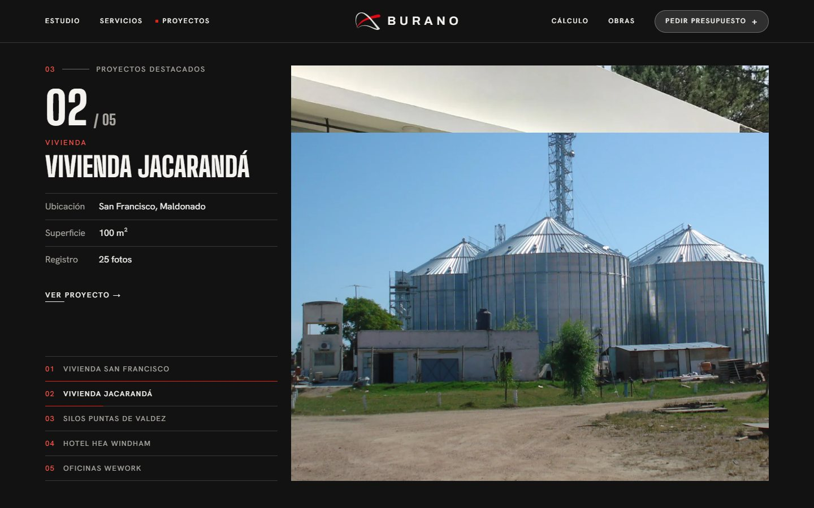
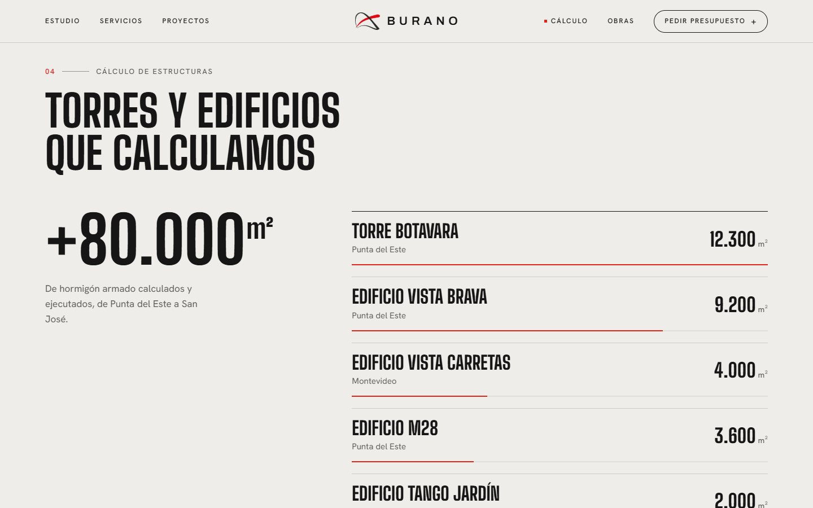
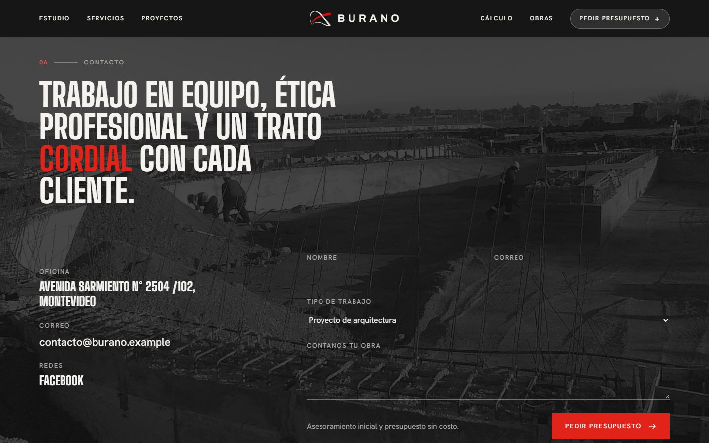
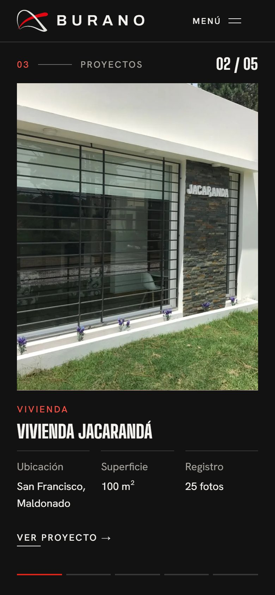

01Hero Corregido
Sin los guiones rojos. El titular entra línea por línea al cargar y las 4 portadas rotan con contador y pausa.
El sitio de Burano pasa a ser una sola página con la misma identidad: Big Shoulders Display, Hanken Grotesk, Archivo, el rojo #E2231A y fotos reales de obra. Suma animaciones de texto, números crecientes, un recorrido de proyectos al scrollear y un navbar inspirado en Yodezeen. Funciona en escritorio, tablet y celular.
Un cambio por tarjeta. Los marcados como Corregido responden a la última revisión.

Sin los guiones rojos. El titular entra línea por línea al cargar y las 4 portadas rotan con contador y pausa.

Lleva links a los lados y la marca al centro, y cambia de tono según la sección. Cada link baja con scroll a su sección. En el hover, "Pedir presupuesto" pasa a texto blanco sobre rojo (antes desaparecía).

El texto se oscurece mientras se lee. 2014, +80.000 m², 10.000 m² y +10 años suben desde cero al entrar en pantalla.

Retratos de Carolina, Leandro y Marcelo Cantieri, tomados del sitio actual, con zoom leve en el hover.

La sección queda fija y cada foto tapa a la anterior de abajo hacia arriba. La ficha va en su propia columna, nunca sobre la foto, con un índice clickeable.

Las obras calculadas aparecen con m² crecientes y barras proporcionales. Servicios va en tres columnas y la galería de obras tiene hover.

Muestra la dirección completa: Avenida Sarmiento N° 2504 /102, Montevideo. La misión entra palabra por palabra, al lado del formulario de presupuesto.

En el celular todo pasa a una columna, el menú se abre a pantalla completa y el scrollshow sigue con la foto arriba y la ficha abajo. Con "reducir movimiento" activado, las animaciones pasan a fundidos.
Pendiente: reemplazar el correo de ejemplo del prototipo (contacto@burano.example) por el real.
Un solo prompt para pegar en Claude Code dentro del repositorio del sitio actual. Cada cambio está entre ▼ INICIO [NN] y ▲ FIN [NN]: para no aplicar un cambio, borrá todo el bloque, incluidas esas dos líneas. Dejá siempre el contexto del principio y las reglas del final.
CONTEXTO (no borrar)
Sitio de Burano S.R.L. en Next.js. Aplicá los cambios de los bloques de abajo. Mantené las fuentes actuales (Big Shoulders Display 800 en mayúsculas para títulos, Hanken Grotesk para texto, Archivo para el logo), los tokens de color (--bg #eeedea, --surface #f7f6f3, --ink #161616, --muted #5e5c58, --line #cfccc6, --accent #e2231a; fondo oscuro #121212, rojo sobre oscuro #ff5247), radius 0 y los textos existentes. No inventes datos. Easing general: cubic-bezier(.22,1,.36,1).
▼ INICIO [01] LANDING ONE-PAGE CON ANCLAS ─────────────────────────
Convertí la home en una sola página con estas secciones y anclas, en orden: #inicio, #estudio, #servicios, #proyectos, #estructuras, #obras, #contacto. Traé el contenido de /empresa, /servicios, /obras y /proyectos como secciones resumidas y dejá esas páginas como "ver todo". Usá html{scroll-behavior:smooth}. Cada sección lleva un label "0N — Nombre" (número rojo, línea de 48px, texto de 13px en mayúsculas con tracking .14em) y un h2 en Big Shoulders 800.
▲ FIN [01] ──────────────────────────────────────────────────────
▼ INICIO [02] NAVBAR ESTILO YODEZEEN ─────────────────────────────
Header fijo de 76px en grilla de 3 columnas: a la izquierda Estudio, Servicios y Proyectos; al centro el isotipo y "BURANO" en Archivo 600 con tracking .32em; a la derecha Cálculo, Obras y un botón píldora "Pedir presupuesto +" (40px, borde 1px, radio 999px). Links en Hanken 500 de 12px, mayúsculas, tracking .16em, con hover "text roll" (dos spans apilados dentro de overflow hidden; el segundo sube y queda en rojo). En el botón píldora, el segundo span usa color:inherit, y en el hover el fondo pasa a #e2231a y el texto a #fff (nunca rojo sobre rojo). Tono: transparente con texto blanco sobre el hero; fondo rgba(238,237,234,.94) con blur sobre secciones claras; rgba(18,18,18,.92) sobre oscuras (marcalas con data-tone). Un punto rojo de 5px marca la sección visible. Debajo de 1024px: logo y botón "Menú" que abre una hoja a pantalla completa (#121212) con links grandes numerados que entran escalonados, el botón de presupuesto y la dirección; aria-expanded en el botón.
▲ FIN [02] ──────────────────────────────────────────────────────
▼ INICIO [03] HERO SIN GUIONES Y CON ENTRADA ANIMADA ─────────────
Sacá los guiones rojos antes de "Ingeniería" y "Construcción". El h1 queda en tres líneas, con clamp(52px,9.4vw,148px) y line-height .9. Animá la entrada una sola vez, cuando document.fonts.ready resuelve: cada línea en un contenedor con overflow hidden (padding-top .14em y margin-top -.14em para no cortar las tildes), el texto sube desde translateY(105%) en 1.1s con 120ms de escalonado, y después aparecen con fundido el kicker y los botones. Mantené las 4 portadas: cambio cada 6s con fundido de 1.4s, contador "01 / 04", barras de progreso clickeables y botón de pausa (aria-pressed).
▲ FIN [03] ──────────────────────────────────────────────────────
▼ INICIO [04] ANIMACIONES AL SCROLLEAR ───────────────────────────
Usá un IntersectionObserver (threshold .2) para revelar cada elemento una sola vez: los h2 .rv-lines suben línea por línea (1s, 100ms de escalonado); la línea del label se dibuja con scaleX; los bloques .rv-up suben 24px con fundido; las fotos .rv-img se descubren con clip-path de inset(0 0 100% 0) a inset(0) mientras la imagen va de scale(1.12) a 1. Importante: observá el contenedor de cada foto y no la foto, porque un elemento recortado por completo no dispara el observer. Sin parallax en los textos. Con prefers-reduced-motion, solo fundidos de opacidad.
▲ FIN [04] ──────────────────────────────────────────────────────
▼ INICIO [05] QUIÉNES SOMOS Y NÚMEROS CRECIENTES ─────────────────
En #estudio, poné el párrafo en Hanken 400 con clamp(24px,2.6vw,38px), con cada palabra en un span que pasa de #85827c a tinta a medida que el párrafo cruza la pantalla. Debajo, 4 cifras en Big Shoulders 800 con borde superior y un tramo rojo de 40px: 2014 (sube desde 1990), +80.000 m², 10.000 m² y +10 años. Al entrar en pantalla, cada cifra cuenta en 1.8s con easeOutQuart y formato es-UY. En celular: 2 columnas y cifras en clamp(40px,11.5vw,48px).
▲ FIN [05] ──────────────────────────────────────────────────────
▼ INICIO [06] EQUIPO CON FOTOS ───────────────────────────────────
Debajo de las cifras, poné 3 tarjetas (fondo #f7f6f3) con la foto de /equipo/*.webp (aspect-ratio 4/3, cover, object-position center 28%), el rol y el año en rojo, el nombre en Big Shoulders y una línea de experiencia tomada de /empresa. Hover: la tarjeta sube 2px y la foto hace zoom a 1.03. Alt descriptivo en cada foto. En celular, una columna.
▲ FIN [06] ──────────────────────────────────────────────────────
▼ INICIO [07] SERVICIOS EN TRES COLUMNAS ─────────────────────────
En #servicios: h2 "Del plano a la obra con un solo equipo", una foto 21:8 con revelado y tres columnas (Arquitectura, Construcción, Cálculo de estructuras) con las listas actuales. Al pie: "Asesoramiento inicial sin costo", "Presupuestos sin costo" y un link a #estructuras. La línea roja del borde superior crece de 12% a 100% en el hover.
▲ FIN [07] ──────────────────────────────────────────────────────
▼ INICIO [08] SCROLLSHOW DE PROYECTOS ────────────────────────────
#proyectos sobre #121212 como recorrido fijado: un contenedor de alto innerHeight*(1+(N-1)*0.8+0.35) con un hijo sticky de 100svh. En desktop, la columna 1-4 lleva el contador "01 / 05", el panel del proyecto activo (categoría en #ff5247, nombre, dl con Ubicación, Superficie o Tipo y Registro, y "Ver proyecto →") y un índice clickeable con progreso; las columnas 5-12 llevan el marco de fotos. Cada foto siguiente se descubre con clip-path de inset(100% 0 0 0) a inset(0) en el 55% de su tramo, y queda quieta el resto. El texto nunca va sobre la foto; el panel cambia con fundido. Proyectos: Vivienda San Francisco, Vivienda Jacarandá, Silos Puntas de Valdez, Hotel HEA Windham y Oficinas WeWork Uruguay. Debajo de 1024px: foto arriba, ficha abajo y una barra de 5 segmentos. Con movimiento reducido, fundido en lugar de clip; con menos de 520px de alto, grilla estática.
▲ FIN [08] ──────────────────────────────────────────────────────
▼ INICIO [09] CÁLCULO DE ESTRUCTURAS CON BARRAS ──────────────────
#estructuras con h2 "Torres y edificios que calculamos": a la izquierda +80.000 m² creciendo; a la derecha la lista de /servicios (Torre Botavara 12.300, Vista Brava 9.200, Vista Carretas 4.000, M28 3.600, Tango Jardín 2.000, Piriápolis 1.000, ANCAP 750), cada fila con los m² creciendo y una barra roja de 2px proporcional a la mayor, que se dibuja al entrar en pantalla. Hover: la fila se corre 12px.
▲ FIN [09] ──────────────────────────────────────────────────────
▼ INICIO [10] GALERÍA DE OBRAS ───────────────────────────────────
#obras con 6 trabajos de /obras en 3 columnas (2 en tablet, 1 en celular): foto 4:3 con revelado, nombre en Big Shoulders con subrayado que se dibuja en el hover, y la zona. Hover: sube 2px y la foto hace zoom a 1.03. Al pie: "Ver las 16 obras →".
▲ FIN [10] ──────────────────────────────────────────────────────
▼ INICIO [11] CONTACTO CON DIRECCIÓN COMPLETA ────────────────────
#contacto sobre #121212 con una foto de obra en gris al 22% detrás. La misión va en Big Shoulders 800 con "cordial" en rojo y entra palabra por palabra. Debajo, los datos (Oficina: "Avenida Sarmiento N° 2504 /102, Montevideo"; Correo: contacto@burano.com.uy; Facebook) y un formulario con Nombre, Correo, Tipo de trabajo y "Contanos tu obra", con labels visibles, campos de 48px y el botón "Pedir presupuesto".
▲ FIN [11] ──────────────────────────────────────────────────────
▼ INICIO [12] RESPONSIVE Y ACCESIBILIDAD ─────────────────────────
Revisá en 1440, 1024, 820, 768, 390 y 320 px: sin scroll horizontal, gutter de 80/48/24 px, botones a ancho completo debajo de 640px, objetivos táctiles de al menos 44px, foco visible en rojo y contraste correcto (texto sobre oscuro en #f4f3f0, rojo sobre oscuro en #ff5247). Agregá ?motion=full para forzar las animaciones al revisar.
▲ FIN [12] ──────────────────────────────────────────────────────
REGLAS FINALES (no borrar)
Aplicá solo los bloques que quedan arriba. Con prefers-reduced-motion, cambiá desplazamientos por fundidos sin ocultar contenido. Al terminar, listá los archivos modificados.